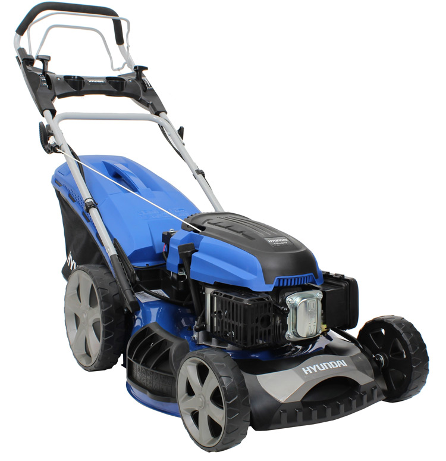

Hyundai HYM510SPE
El Hyundai HYM510SPE es un cortacésped de alto rendimiento, perfecto para uso doméstico y profesional. Con su potente motor de 173 cc y un ancho de corte de 51 cm, este cortacésped ofrece un rendimiento excepcional en cualquier tipo de césped. Además, cuenta con un sistema de ajuste de altura de corte que permite adaptar el corte a tus necesidades específicas.
El diseño robusto y ergonómico del Hyundai HYM510SPE lo convierte en una opción ideal para usuarios que buscan un cortacésped duradero y fácil de maniobrar. El sistema de peine para césped asegura un corte limpio y uniforme, incluso cerca de los bordes.
No esperes más y adquiere tu Hyundai HYM510SPE para disfrutar de un jardín perfecto en todo momento.
Compra ahora